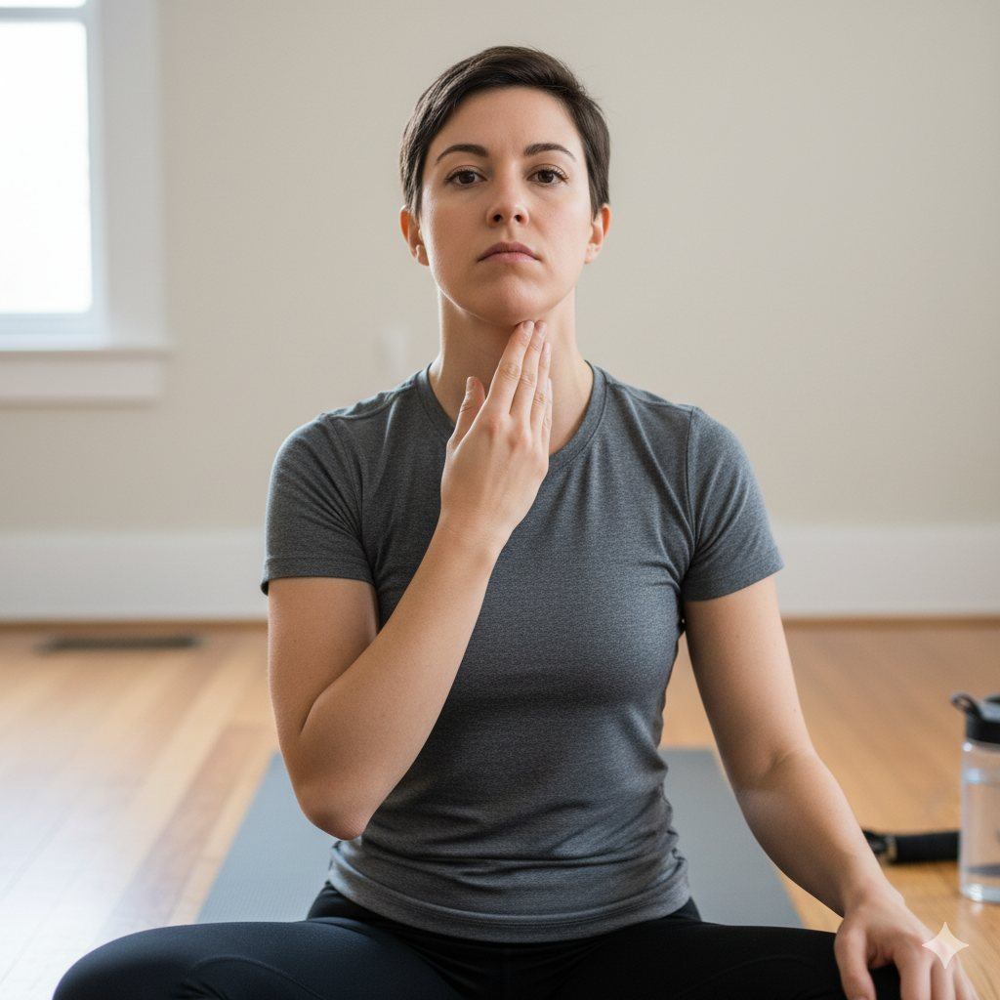
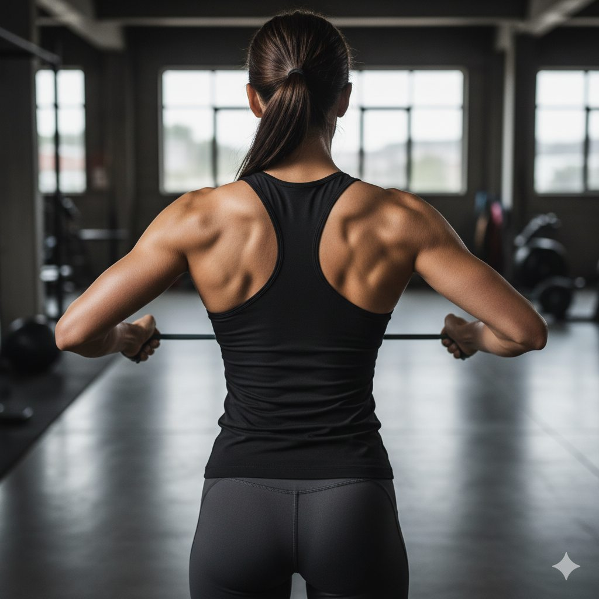
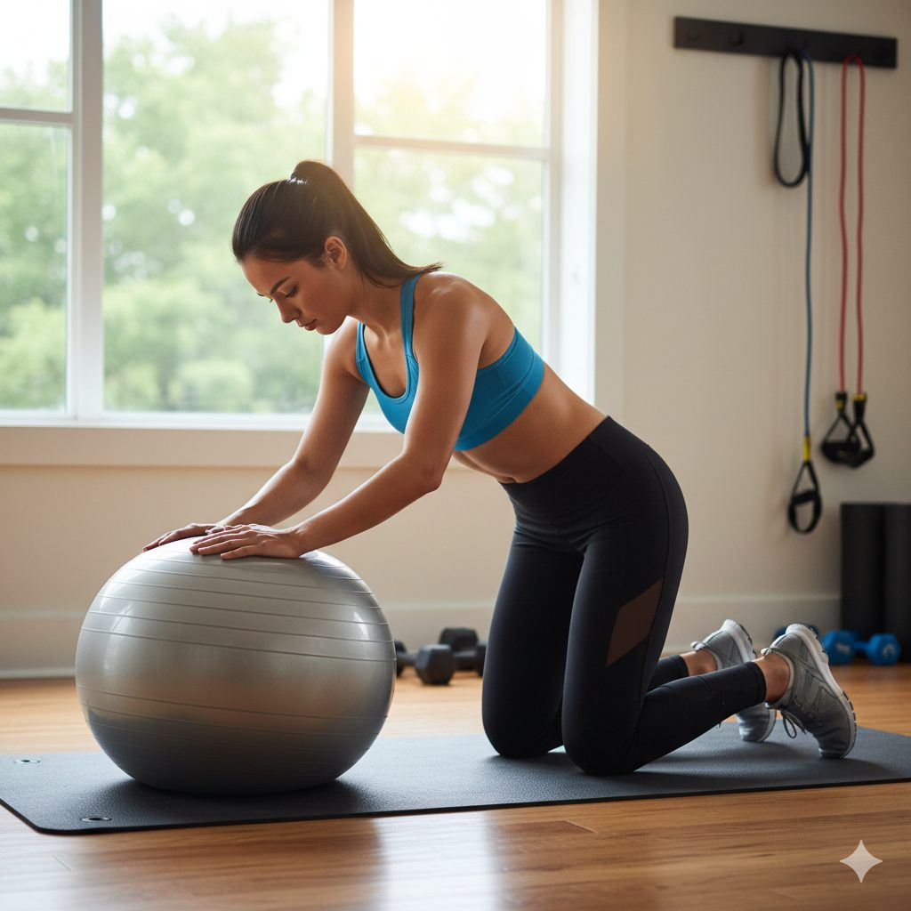
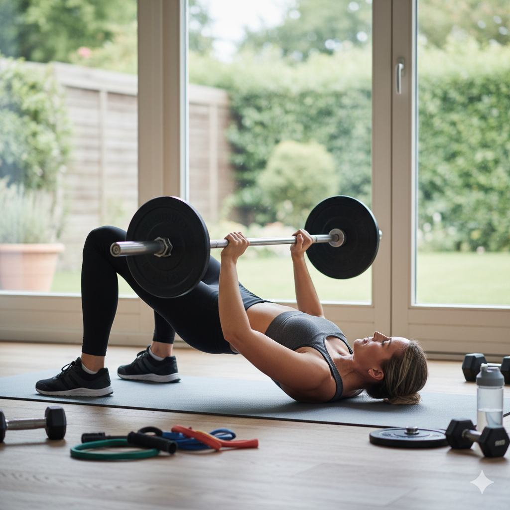
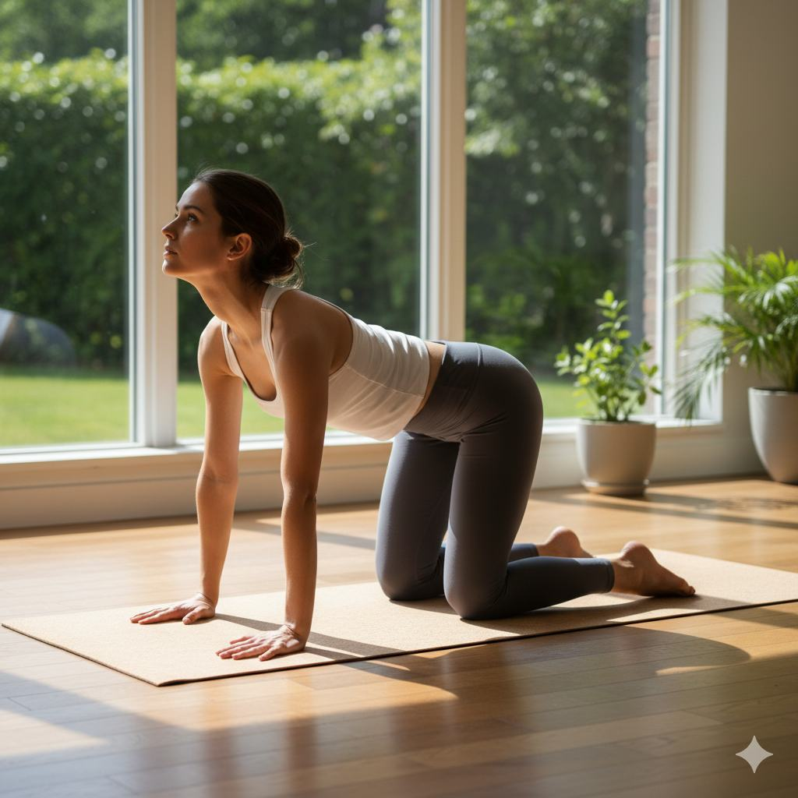
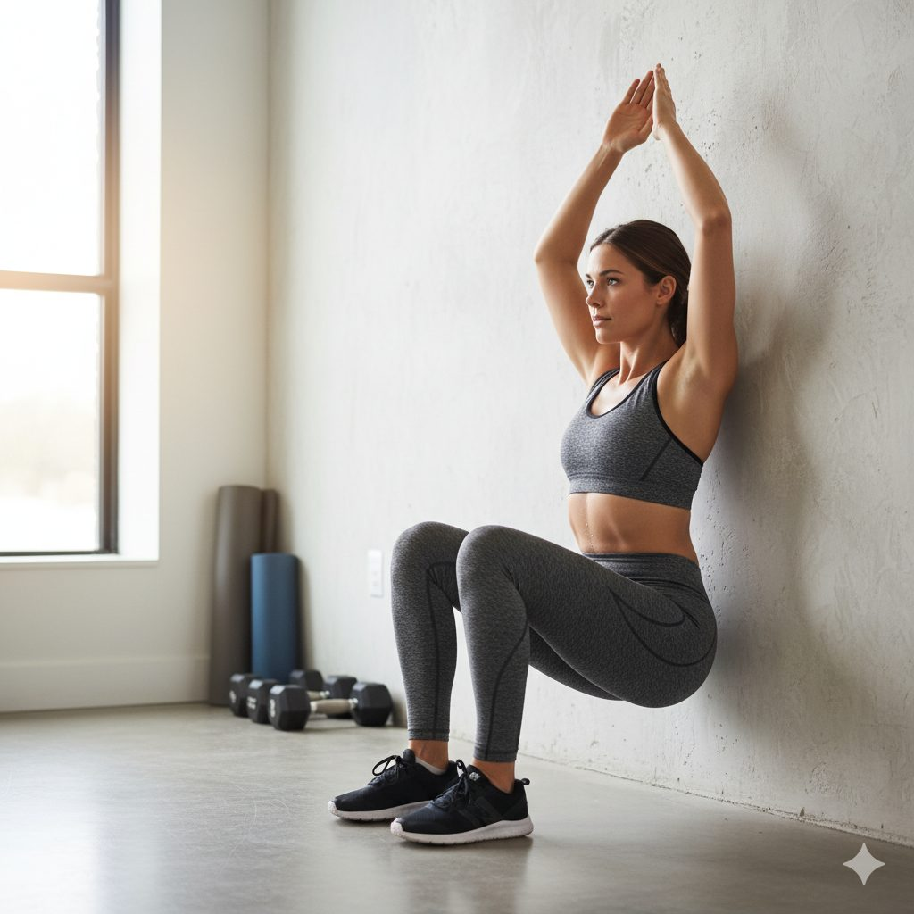
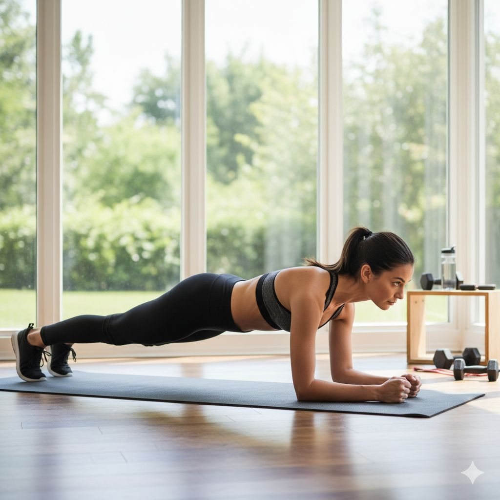

Fix Your Posture: 7 Exercises to Relieve Back Pain
Did you know that the way you sit right now could be setting you up for a lifetime of back pain? As a physical therapist with over 15 years of experience, I've seen how poor posture silently contributes to chronic pain. The good news is that with targeted exercises, you can reverse these effects and reclaim a pain-free life.
Poor posture doesn't just affect how you look—it places uneven stress on your spine, leading to muscle imbalances, joint degeneration, and persistent discomfort. The modern sedentary lifestyle, with hours spent hunched over screens, has created what some experts call an "epidemic of poor posture."
In this article, I'll share seven evidence-based exercises that specifically target the muscles responsible for maintaining proper alignment. These movements are designed to strengthen weak muscles, stretch tight ones, and restore balance to your musculoskeletal system.
1. Chin Tucks
Chin tucks are one of the most effective exercises for correcting forward head posture, a common problem among people who work at desks. This exercise strengthens the deep neck flexors and helps realign your cervical spine.
How to perform:
- Sit or stand with your back straight and shoulders relaxed
- Look straight ahead and imagine pulling your chin straight back without tilting your head up or down
- Hold for 3-5 seconds, then relax
- Repeat 10-15 times, 2-3 times daily
Tip: Place a finger on your chin as a guide to ensure you're moving straight back rather than dipping your head.
2. Scapular Retractions
This exercise targets the rhomboids and middle trapezius muscles, which help pull your shoulders back and counteract the rounded shoulder posture that develops from prolonged sitting.
How to perform:
- Sit or stand with your arms at your sides
- Squeeze your shoulder blades together as if trying to hold a pencil between them
- Keep your shoulders down, not shrugged up toward your ears
- Hold for 5-10 seconds, then release
- Repeat 10-15 times, 2-3 times daily
Tip: Imagine your shoulder blades sliding down and toward your back pockets as you perform the movement.
3. Thoracic Extensions
The thoracic spine (upper back) often becomes stiff and rounded from poor posture. Thoracic extensions help restore mobility to this area and counteract the forward-flexed position.
How to perform:
- Sit on a chair and clasp your hands behind your head
- Gently arch your upper back over the top of the chair
- Look up toward the ceiling as you extend
- Hold for 10-15 seconds, then return to starting position
- Repeat 5-10 times, 1-2 times daily
Tip: You can also perform this exercise using a foam roller placed horizontally across your mid-back.
4. Glute Bridges
Weak glute muscles contribute to anterior pelvic tilt and increased stress on the lower back. Glute bridges activate and strengthen these important postural muscles.
How to perform:
- Lie on your back with knees bent and feet flat on the floor
- Engage your glutes and lift your hips until your body forms a straight line from shoulders to knees
- Hold for 2-3 seconds at the top, then lower with control
- Perform 2-3 sets of 12-15 repetitions
Tip: Focus on squeezing your glutes rather than arching your lower back to achieve the lift.
5. Cat-Cow Stretch
This classic yoga pose helps improve mobility throughout the entire spine while relieving tension in the back muscles.
How to perform:
- Start on all fours with hands under shoulders and knees under hips
- Inhale as you drop your belly, lift your chin and tailbone (Cow position)
- Exhale as you round your spine, tucking your chin and tailbone (Cat position)
- Flow smoothly between these positions for 10-15 repetitions
Tip: Move slowly and deliberately, focusing on the sensation of each vertebra moving.
6. Wall Angels
Wall angels improve shoulder mobility and thoracic extension while reinforcing proper postural alignment against a fixed surface.
How to perform:
- Stand with your back against a wall, feet slightly forward
- Press your lower back, upper back, and head against the wall
- Raise your arms to shoulder height with elbows bent 90 degrees (like a goalpost)
- Slowly slide your arms up overhead while maintaining contact with the wall
- Return to starting position and repeat 10-12 times
Tip: If you can't maintain contact with the wall throughout the movement, reduce the range of motion.
7. Plank
The plank is a fundamental core exercise that strengthens the entire anterior chain, including the abdominals, which play a crucial role in supporting proper posture.
How to perform:
- Start in a push-up position with elbows directly under shoulders
- Engage your core and glutes to maintain a straight line from head to heels
- Hold for 20-60 seconds, breathing steadily
- Perform 2-3 repetitions
Tip: Avoid sagging your hips or hiking them too high. Imagine your body as a solid plank of wood.
Incorporating these seven exercises into your daily routine can make a significant difference in your posture and back pain within just a few weeks. Consistency is key—aim to perform them daily, especially if you have a sedentary job.
Remember that while these exercises are generally safe for most people, it's always wise to consult with a healthcare professional before starting any new exercise program, especially if you have existing back problems or other health conditions.
Your posture didn't deteriorate overnight, and it won't be fixed overnight either. But with patience and consistent effort, you can retrain your body to maintain proper alignment naturally, reducing pain and improving your overall quality of life.
Frequently Asked Questions
Most people begin to notice some improvement within 2-4 weeks of consistent practice. However, the timeline varies depending on factors like the severity of your postural issues, how consistently you perform the exercises, and your overall physical condition. For significant, lasting changes to your posture, plan on committing to at least 3-6 months of regular practice.
While all the exercises are beneficial, scapular retractions are particularly important for desk workers. This exercise directly counters the rounded shoulder posture that develops from hours of computer use. Try to perform a set of 10-15 scapular retractions every hour during your workday. Additionally, make sure your workstation is ergonomically set up with your monitor at eye level and your feet flat on the floor.
While these exercises can help with general postural improvement and muscular back pain, specific conditions like sciatica or herniated discs require tailored approaches. Some of these exercises may be beneficial, but others could potentially aggravate certain conditions. It's crucial to consult with a physical therapist or healthcare provider who can assess your specific situation and recommend appropriate exercises. Self-treating serious back conditions without professional guidance can sometimes do more harm than good.